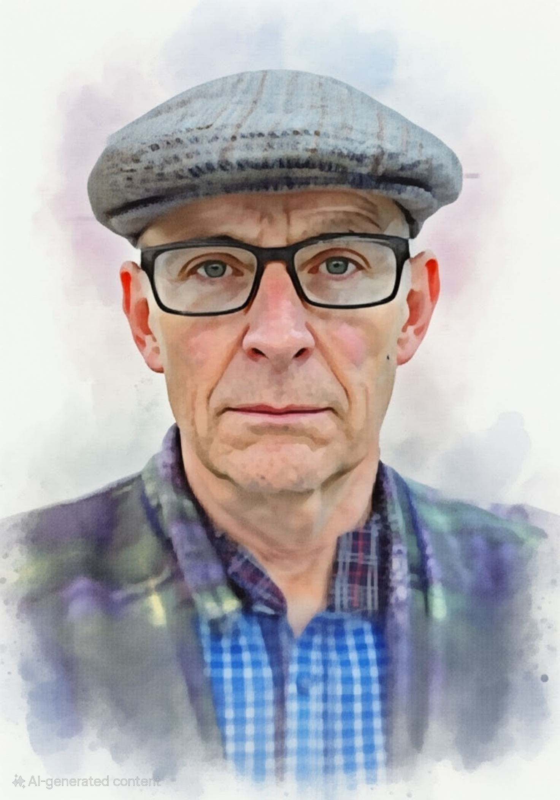

Material used in the creation of this site
Most of the material (images and primary text) used in this site was created by me, and I own the copyright to this content.
However, the following third-party materials have also been used:
- AI Assistant: Assistance with HTML structure, CSS styling, and debugging was provided by a large language model. The image on this page was also generated by the AI. The AI does not hold copyright to any content generated, and all content was reviewed and edited by me to ensure accuracy and appropriateness.
- Pergolesi's Stabat Mater: Music video featuring Nathalie Stutzmann, linked from YouTube: https://youtu.be/qzOmPUu-F_M
- Allegri's Miserere: Music video featuring the a cappella group Vocce8, linked from YouTube: https://youtu.be/cLtm0DqNPHM
- Background music - Psalm 22: YouTube Music track of the Westminster Abbey Choir singing Psalm 22: https://tinyurl.com/333w2ekr